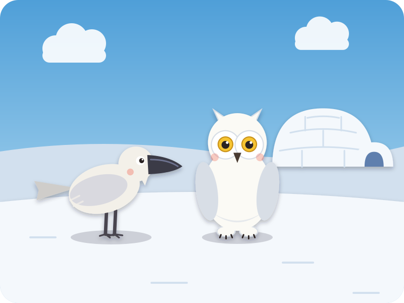
An Inuit tale from the Arctic
The Owl and the Raven
"Story, story — are your ears open?" Kai: "Open!"
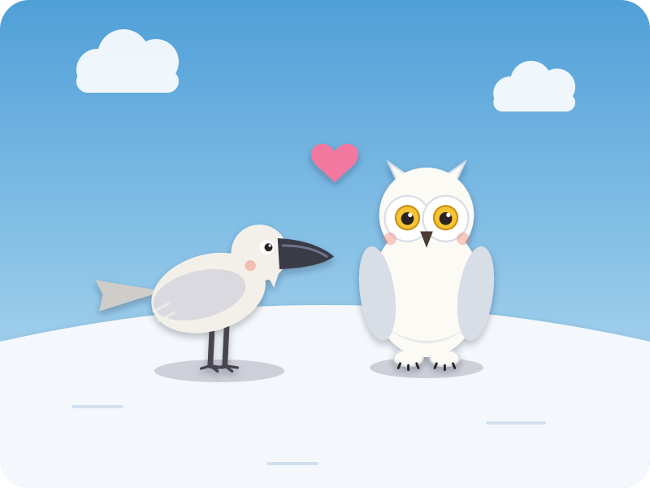
Long, long ago, Owl and Raven were both white — as white as snow.
And they were the very best of friends.
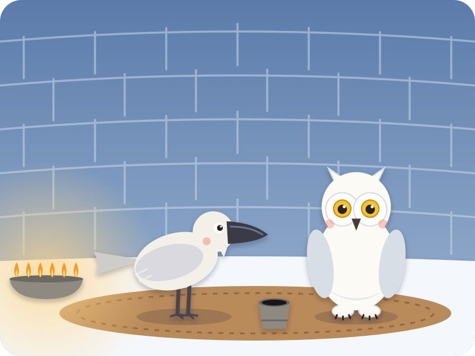
One cold night they sat in their snow house, by the warm stone lamp. Next to them was a little pot of black lamp soot.
"Let's make each other new clothes!" said Raven.
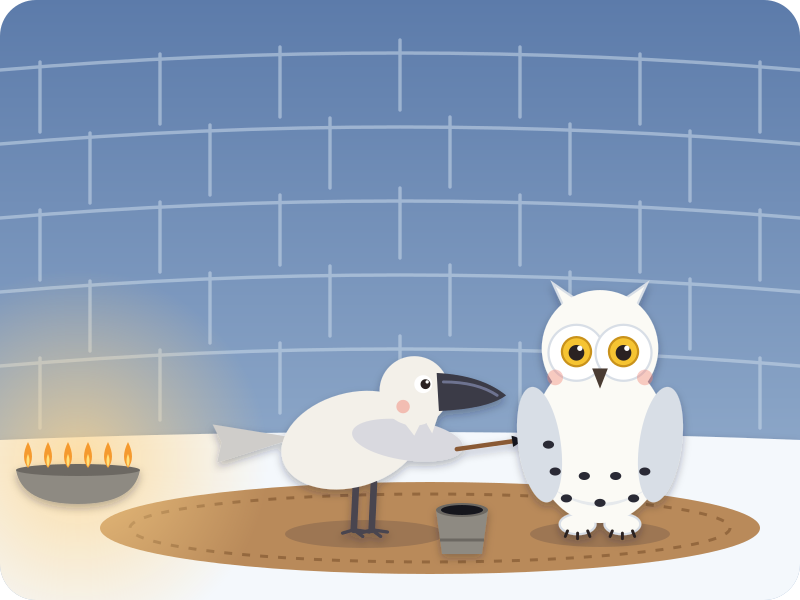
Raven went first. He dipped his brush in the black soot and began. "Dot, dot, dot!" Kai taps dots on your arm
Owl kept very still.
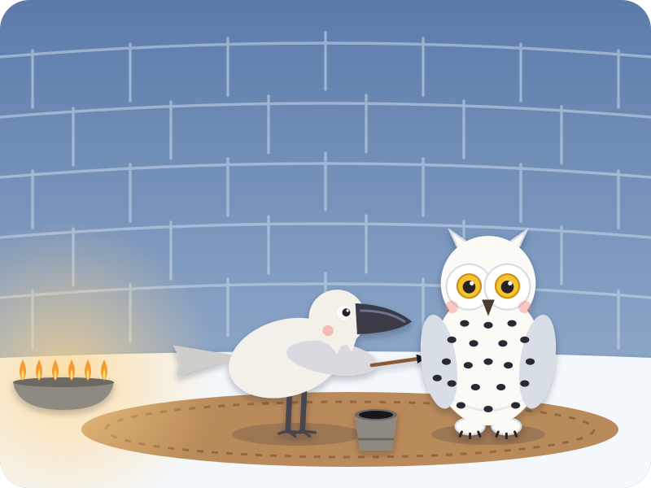
Dot by dot, the spots grew. "Dot, dot, dot!" Kai taps more dots
Owl didn't wiggle one bit. She sat as still as a stone.
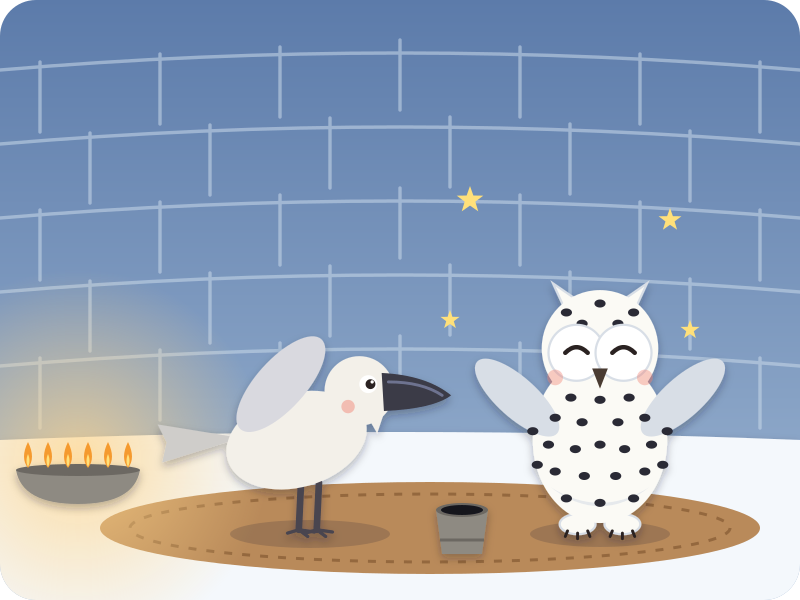
At last it was done — a beautiful spotted dress!
Owl flung out her wings. "Hoo-hoo! I love it!" Kai hoots like an owl
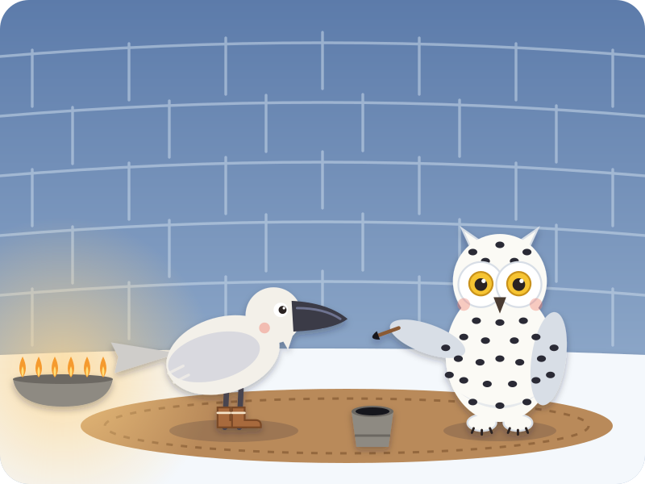
Now it was Raven's turn. First, Owl made him a pair of fine new boots.
Then she picked up the brush. "Sit still, Raven, and I'll give you spots too."
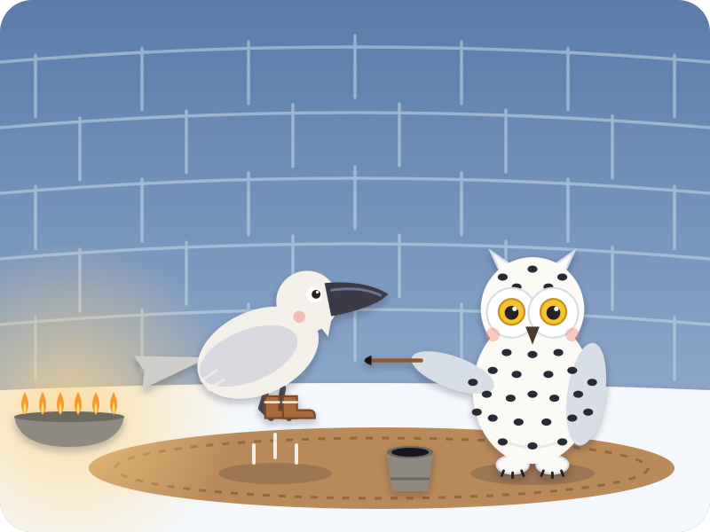
But Raven was much too excited. He hopped!
"Hop, hop — sit still, Raven!" Kai says it with Owl
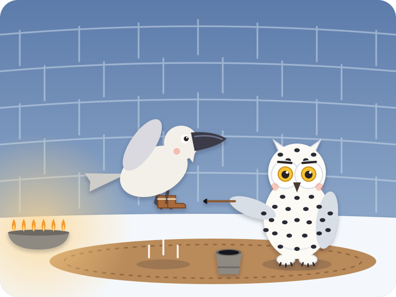
Raven hopped higher, flapping his wing. "Hop, hop — sit still, Raven!" Kai, louder!
"I'm trying!" said Raven. But his feet just kept on hopping.
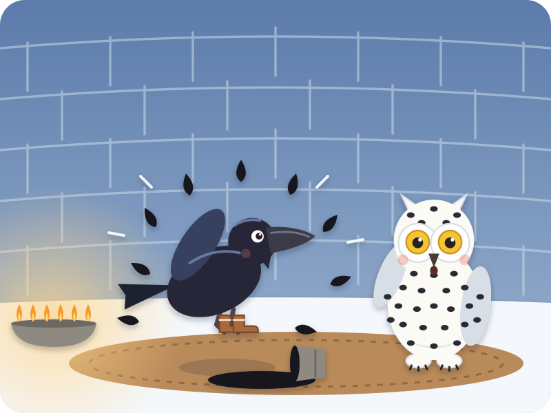
Then Raven did one great BIG hop — and his boot knocked over the pot!
SPLOSH! Kai claps Black soot flew everywhere… all over Raven!
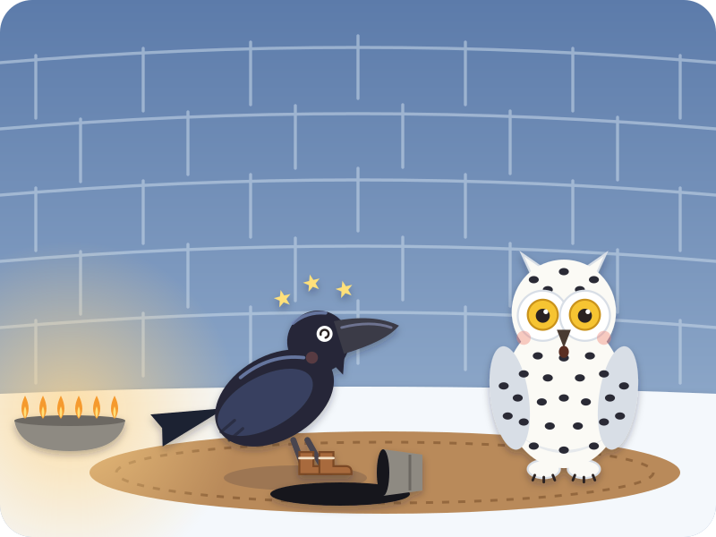
Raven sat up and blinked. He was black from his beak to his tail!
"Quawk! Quawk!" Kai quawks like a raven
"Oh, Raven!" said Owl. "Are you all right?"
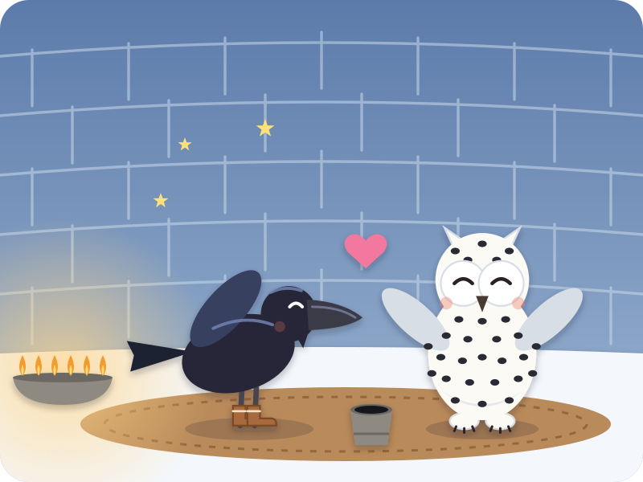
Raven looked at his feathers. They shone like the night sky. "Quawk! I like it!"
"That's what you get for hopping!" laughed Owl. And Raven laughed too. They were still the very best of friends.
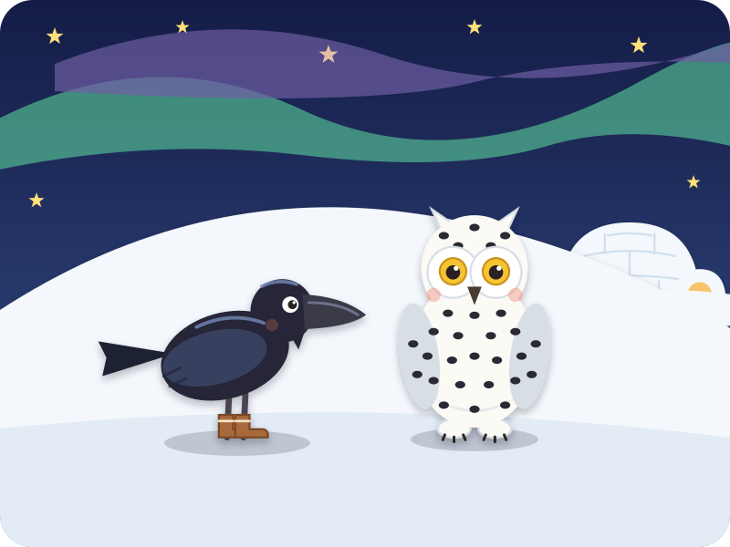
And that is why, ever since, Owl is white with black spots…
…and Raven is black all over, and still says "Quawk!" Kai: one hoot, one quawk
The End
"Snip, snap, snout — this tale's told out."
Swipe back to read it again
Driving? Tell it without the page · six beats
The picture book is for home, bedtime, or a passenger. In the car, tell it from memory — bold is Kai's part.
- Long ago Owl and Raven were both white as snow, and best friends. By the lamp in their snow house, they decide to make each other new clothes.
- Raven goes first and gives Owl a spotted dress with the black lamp soot — "Dot, dot, dot!" — while Owl sits as still as a stone.
- Owl loves it — "Hoo-hoo!" — and makes Raven new boots. Now it's Raven's turn for spots.
- But Raven is too excited and hops and hops: "Hop, hop — sit still, Raven!" (say it twice, louder each time)
- One BIG hop and his boot knocks over the soot pot — SPLOSH! Raven is black all over: "Quawk! Quawk!"
- Raven likes his shiny black feathers, the two friends laugh, and that's why the owl is spotted and the raven is black — one hoot, one quawk!
After the story · car-friendly wondering
"Can you tap dot, dot, dot on my hand? How many dots did you make?"
"Why couldn't Raven sit still? Is it hard for you to sit still sometimes?"
"If a friend made you new clothes, what colour and pattern would you ask for?"
Where this story comes from
This is an Inuit tale from the Arctic. The version we followed was written down by the anthropologist Franz Boas and printed as "The Owl and the Raven" in The Central Eskimo (Sixth Annual Report of the Bureau of Ethnology, Washington, 1888, p. 641), among the traditions he gathered on Baffin Island, in what is now Nunavut, Canada. Boas's old book uses the older word "Eskimo"; today the people who tell these stories are called Inuit. In Boas's short telling, the owl and the raven are fast friends. The raven makes the owl a new dress, "dappled white and black", and the owl makes the raven a pair of whalebone boots and begins a white dress for him. But the raven keeps hopping about and will not sit still, so the owl loses patience and pours the lamp oil over him. The raven cries "Qaq! Qaq!" and has been black all over ever since. This retelling is our own, for a 4-year-old. Two details, that both birds began plain white and that Raven paints the dots with black lamp soot, are not in Boas; painting with lamp soot is found in related Inuit tellings such as the Raven and the Loon story. We also left out the whalebone and the white dress. In our version nobody gets angry: Raven's own big hop knocks the pot over by accident. The ending where Raven likes his new feathers and the two stay best friends is something we added; Boas's fable simply ends with the raven black. "Quawk!" is our spelling of his cry. We also searched Henry Rink's Tales and Traditions of the Eskimo (1875) and could not find this tale there, so we cite only Boas. Other tellings may differ.